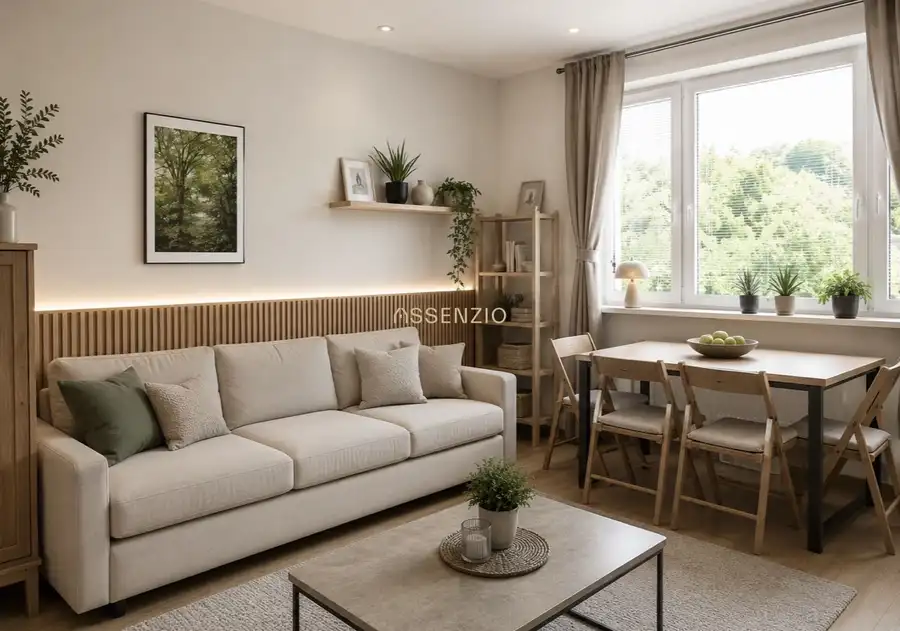
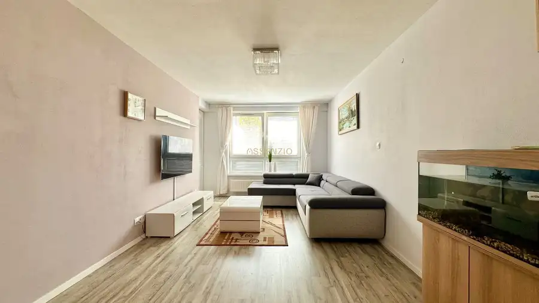
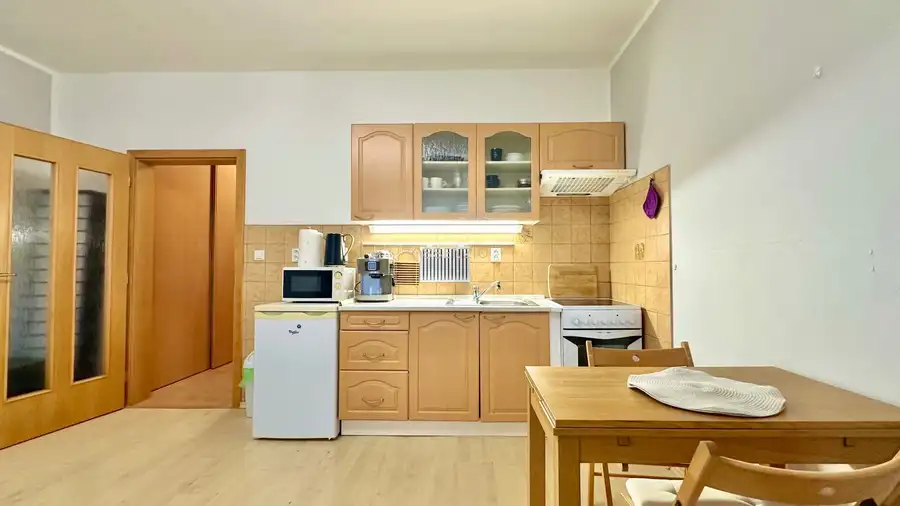

Veľká garsónka so zasklenou lodžiou | Ján Jonáša | Devínska Nová Ves
Devínska Nová Ves, Bratislava
- Dispozícia1-izbový
- Plocha37 m²
- Poschodie7. z 7
- Stavúplne prerobený
O nehnuteľnosti
Ponúkame na predaj priestrannú garsónku v Bratislave – Devínskej Novej Vsi za cenu 143 900€. Byt zaujme praktickou dispozíciou, zasklenou a zateplenou lodžiou a výbornou polohou s množstvom zelene v okolí.
Byt pozostáva z hlavnej obytnej izby s kuchynským kútom, vstupnej predsiene a kúpeľne s vaňou a WC. V roku 2018 prešiel rekonštrukciou, v rámci ktorej bola vymenená kuchynská linka, zrekonštruovaná kúpeľňa a položená nová dlažba v celom byte vrátane lodžie.
Veľkou výhodou je zasklená a zateplená lodžia s výmerou 5 m², ktorú je možné využívať počas celého roka ako ďalší priestor na relax, prácu alebo uskladnenie. Lodžia je vybavená plastovými oknami so žalúziami a zateplenou podlahou.
Vybavenie a výhody
* klimatizácia
* zasklená a zateplená lodžia – 5 m²
* bezpečnostné vstupné dvere
* ústredné kúrenie s radiátormi a vlastným meradlom
* vlastné meradlo TÚV
* osobný aj nákladný výťah
* uzamykateľný vstup do bytového domu na čip
* možnosť prenájmu garáže
* bezplatné vonkajšie parkovanie pred bytovým domom
Lokalita
Byt sa nachádza na ulici Ján Jonáša v Devínskej Novej Vsi, v lokalite s kompletnou občianskou vybavenosťou a výbornou dostupnosťou.
Autobusová zastávka sa nachádza priamo pri bytovom dome. V okolí je množstvo zelene a možností na aktívny oddych – Sandberg, Devínska Kobyla či Cyklomost.
Významnou výhodou je blízkosť Volkswagen Slovakia, vďaka čomu má nehnuteľnosť zaujímavý potenciál aj z pohľadu investície a následného prenájmu. V dostupnej vzdialenosti sa nachádza Kaufland, Bory Mall a Nemocnica Bory s lekárňou.
Byt je vhodný na vlastné bývanie aj ako investičná nehnuteľnosť. Vďaka rekonštrukcii, klimatizácii a nadštandardnej lodžii ponúka komfortné bývanie bez potreby okamžitých ďalších investícií.
Cena: 143 900€
Provízia realitnej kancelárie je zahrnutá v kúpnej cene.
V prípade záujmu zabezpečíme kompletný realitný servis vrátane právneho servisu, prípravy zmluvnej dokumentácie a asistencie pri katastrálnom konaní.
Parametre
| Úžitková plocha | 37 m² |
|---|---|
| Poschodie | 7/posledné poschodie |
| Počet poschodí | 7 |
| Stav | úplne prerobený |
| Kúpeľňa | vaňa |
| Lódžia | áno |
| Parkovanie | áno |
| Postavené z | panel |
| Zariadenie | zariadený |
| Zateplený objekt | áno |
| Klimatizácia | áno |
| Energetický certifikát | áno |
| Orientácia | východná |
| Dátum zverejnenia | 4. 9. 2026 |
Kde to je
Mohlo by Vás zaujímať

Byt10 188 000 €Na predaj – útulný 2-izbový byt v centre Lamača Lamač, Bratislava 2-izbový35 m²3. podlažie Realitná kancelária Assenzio ponúka na predaj pôvodne 1-izbový byt, ktorý bol praktickou rekonštrukciou upravený na plnohodnotný 2-izbový byt.…
Byt8 1 200 €Na prenájom moderný 3-izbový byt s garážovým státím – Nobelova Nové Mesto, Bratislava 3-izbový78 m²1. podlažie Realitna kancelária Assenzio ponúka na dlhodobý prenájom priestranný 3-izbový byt v obľúbenom projekte na Nobelovej ulici v mestskej časti Bratislava…
Byt6 Cena dohodouPredaj – garzonka 31 m2 – antolska – Petržalka Petržalka, Bratislava 31 m²4. podlažie Ponúkame na predaj zariadenú garsónku s výmerou 31 m², situovanú na 4. poschodí zatepleného tehlového bytového domu na Antolskej ulici v Bratislave –…